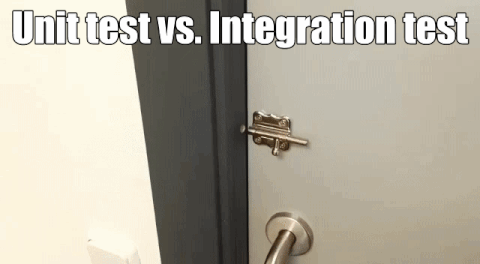

name: inverse layout: true class: center, middle, inverse --- # Rust An introduction to Rust https://github.com/o0Ignition0o/an-introduction-to-rust .footnote[Jeremy Lempereur - [blog](https://blog.jeremylempereur.com)] --- #### What is Rust? #### How does Rust achieve this ? #### How old is it? #### Where can we find some rust code? #### Which toolset does rust provide? #### Procedural programming #### OOP #### Functional programming #### Take care of exceptions #### Tests ! #### Where can I start learning ? --- # What is Rust? Memory safety without garbage collection Abstraction without overhead Concurrency without data races Stability without stagnation ## No compromise ! --- # How des Rust achieve this ? Borrow checking Immutability by default Lifetimes ## 0 => N references, or 0 => 1 mutable reference only ! --- # How old is it ? .left[ Personal project started in 2006 by Mozilla employee Graydon Hoare Mozilla began sponsoring the project in 2009 Rust 1.0, the first stable release, was released on May 15, 2015. Since 2016 it is the most loved language from StackOverflow surveys ] --- ## Where can I find some rust code ? Firefox Chef Dropbox npm games embedded devices your IDE (vscode ripgrep) and much more... ## Are we *anything* yet ? http://www.arewewebyet.org/ https://areweideyet.com/ http://arewegameyet.com etc. --- # Which tooling does Rust provide ? .left[ A package manager, Cargo, so you can install build and run any "crate" for your project, The crate repository can be found on https://crates.io An indent / code format manager (rustfmt) An awesome compiler, plus a static analysis tool (clippy) which are really helpful... and sometimes less. ] --- # With Rust you can --- layout: false # Do some Procedural programming <img class="center" src="img/procedural_programming.jpg" style="width: 30%; margin:0 auto;"/> ```rust fn sum(x: u32, y: u32) -> u32 { x + y } fn print_result(x: u32, y: u32, sum: u32) -> { println!("{} plus {} is {}", x, y, sum); } ``` --- layout: false # Allocate Everywhere ```rust let foo = 1234; // ok this goes to the stack. let bar = vec![1,2,3,4]; // Vectors go to the heap let baz = Box::new(1234); // Put the type to the heap, and toss me a reference to it ! ``` --- layout: false ## Do some Object Oriented programming (sort of) ```rust trait MakesNoise { fn make_noise(self) -> (); } struct Dog; struct Cat; impl MakesNoise for Dog { fn make_noise(self) -> () { println!("WOOF WOOF"); // Who let the dogs out ? } } impl MakesNoise for Cat { fn make_noise(self) -> () { println!("Everybody wants to be a cat !"); // Because the cat's the only cat, who knows where it's at } } ``` --- layout: false ## Do some Functionnal programming ```rust fn lowest_above_zero(temperatures: Vec<i32>) -> i32 { temperatures.iter().cloned().filter(|t| t > &0).fold( i32::max_value(), |lowest_temperature, current| { if current < lowest_temperature { current } else { lowest_temperature } }, ) } fn main() { let temperatures = vec![-12, -8, -1, 2, 3, 12]; println!( "The lowest temperature above zero is {}", lowest_above_zero(temperatures) // The lowest temperature above zero is 2 ); } ``` --- layout: false ## Create some nice enums and do some pattern matching ```rust enum ThingInTheSky { Bird(i32), Plane(bool), Superman, SomethingElse, } fn what_is_it(thing: ThingInTheSky) -> () { match thing { ThingInTheSky::Bird(number_of_wings) => { println!("Is that a bird ? it has {} wings!", number_of_wings) } ThingInTheSky::Plane(is_big) => println!( "Is that a huge plane ? {}", is_big ), ThingInTheSky::Superman => println!("No, it's superman ! ! !"), } } ``` --- layout: false ## It allows us to make sure we take care of exceptions / optional stuff : ```rust fn try_to_get_an_integer() -> Result<i32, Err<String>> { Ok(1) // Err(String::from("Something went wrong !")) } fn maybe_an_integer() -> Option<i32> { Some(1) // None } fn main() -> () { match try_to_get_an_integer() { Ok(my_awesome_value) => //Do something with it, Err(error_message) => println!(error_message) } } ``` --- layout: false ## Let's not forget about tests  --- layout: false ## Pretty simple, right ? ```rust fn sum(a: i32, b: i32) -> i32 { a + b } #[test] fn two_plus_three_is_five { // Setup let expected_result = 5; let a = 2; let b = 3; assert_eq!(expected_result, sum(a,b)); } ``` --- layout: false ## Icing on the cake : Documentation is also a test ! ```rust /// ///extern crate testing; /// use testing::sum; /// /// # fn main() { /// // Create two integers /// let two = 2; /// let four = 4; /// let sum = sum(two, four); /// assert_eq!(6, sum); /// # } /// fn sum(a: i32, b: i32) -> i32 { a + b } #[test] fn two_plus_three_is_five { // Setup let expected_result = 5; let a = 2; let b = 3; assert_eq!(expected_result, sum(a,b)); } ``` --- template: inverse # Where can I start learning ? Read the rustlang book ! (https://doc.rust-lang.org/stable/book/second-edition/index.html) .left[ Consider having a look at : - Rust on Embedded systems (https://japaric.github.io/discovery/README.html) - Rust for the web (hyper, gotham, and actix provide great quickstarts) - Building a toy web browser (https://limpet.net/mbrubeck/2014/08/08/toy-layout-engine-1.html) - Building a toy operating system ! (https://intermezzos.github.io/book/second-edition/) ] ## Start hacking, if it compiles, then it works ! --- name: last-page template: inverse ## Any questions ? https://github.com/o0Ignition0o/an-introduction-to-rust Send me a DM on [twitter](https://twitter.com/o0ignition0o), an [email](jeremy.lempereur@gmail.com), or a private message on [LinkedIn](https://www.linkedin.com/in/jeremy-lempereur-9564b78a/) !